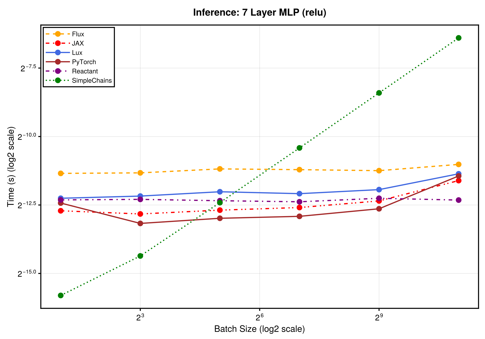
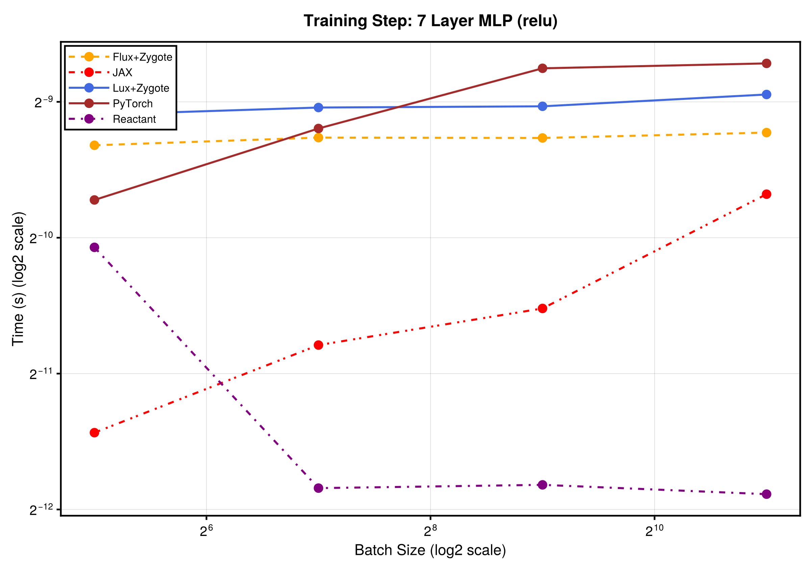
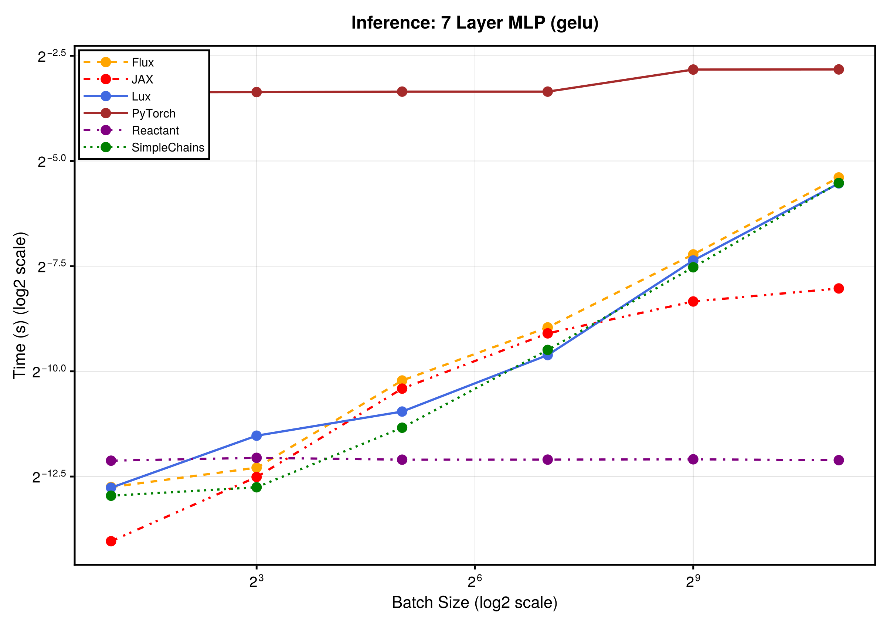
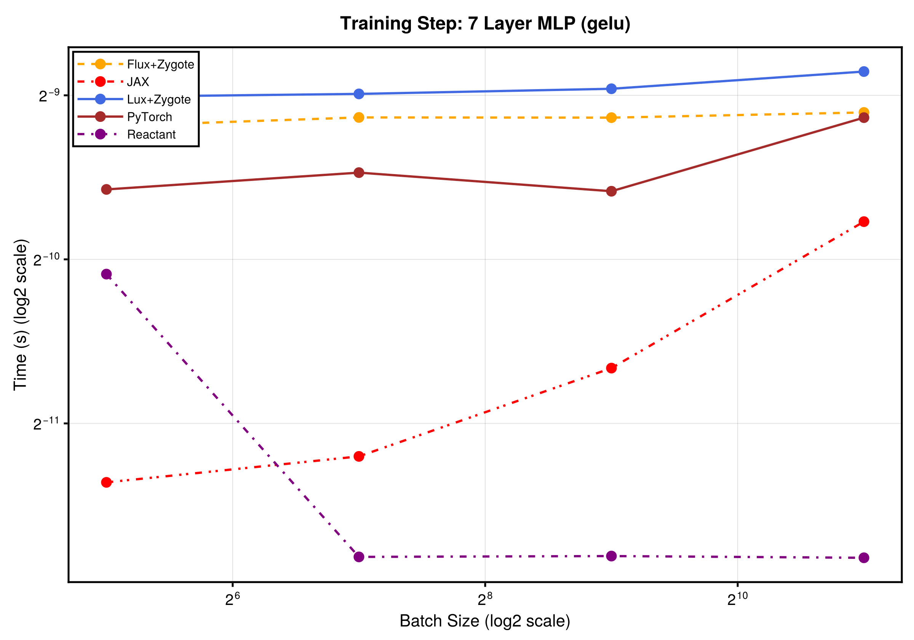
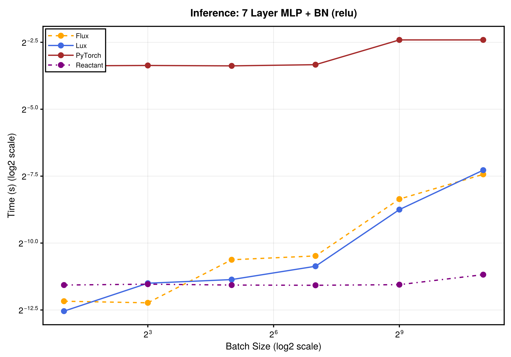
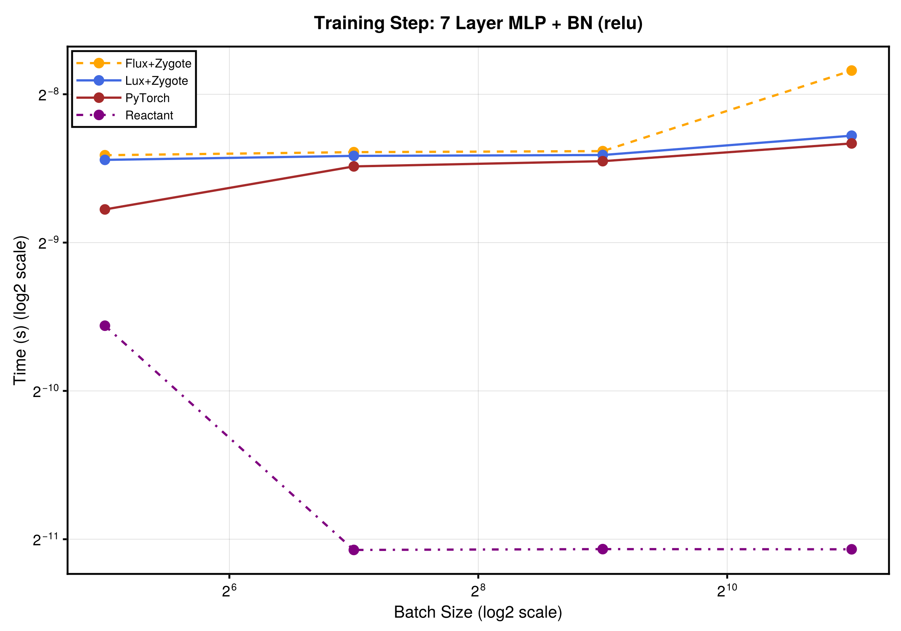
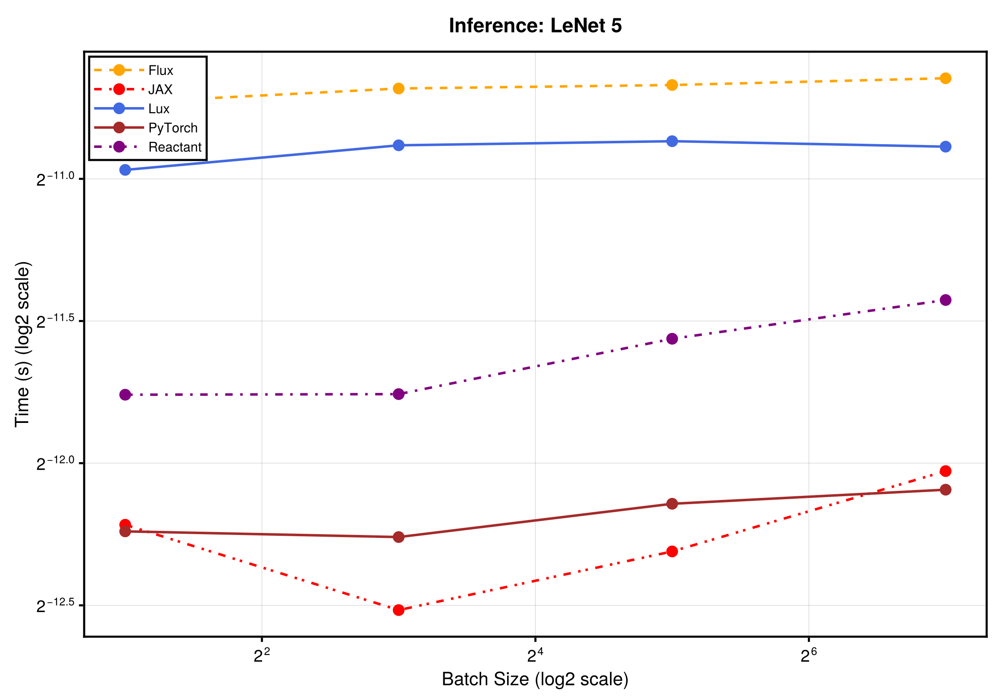
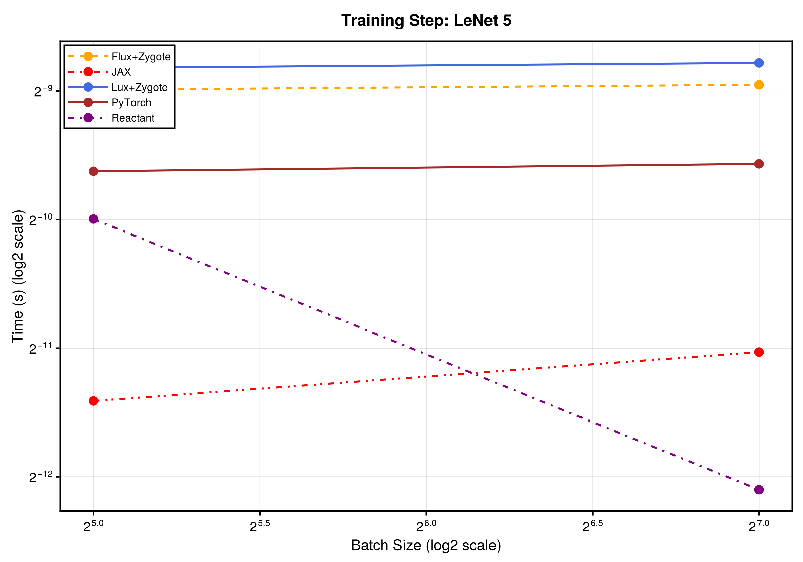
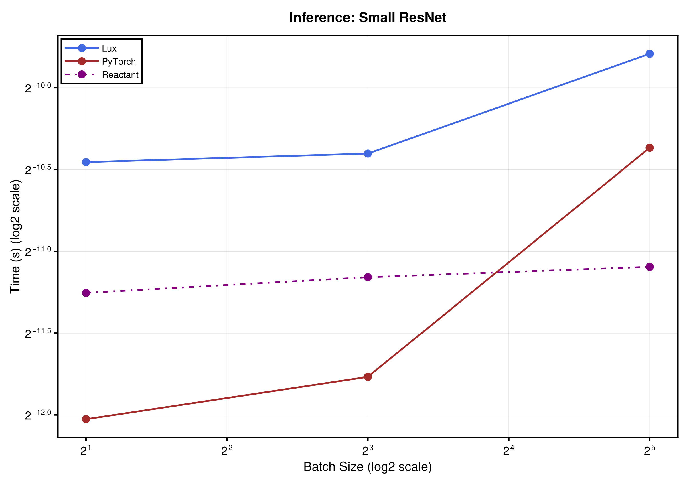
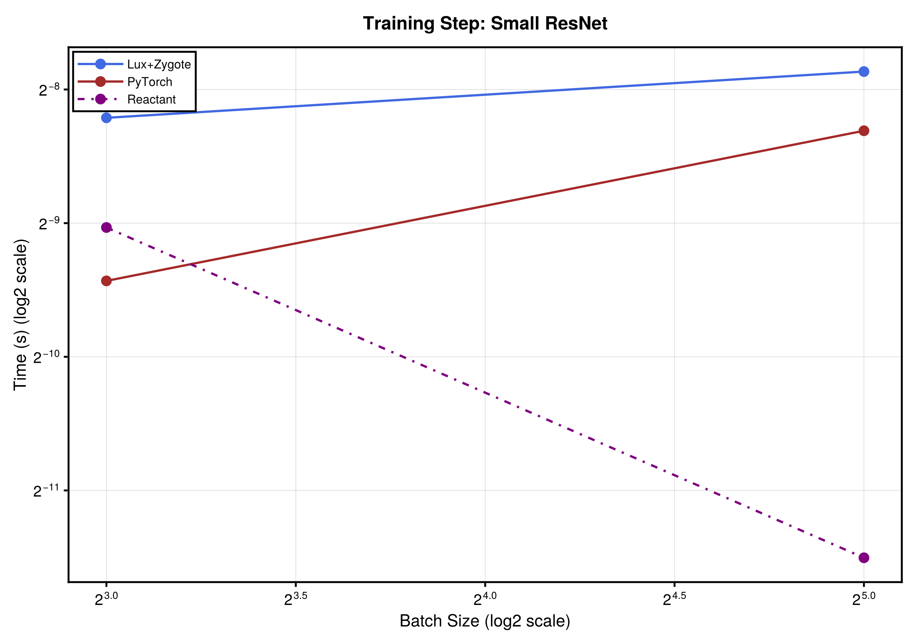

Simple Neural Networks
This benchmark compares Julia and Python deep learning frameworks on common neural network workloads. We compare:
Julia Frameworks:
- Lux.jl
- Flux.jl
- SimpleChains.jl (via Lux.jl wrapper, CPU-optimized small networks)
- Reactant.jl (XLA-compiled Lux models)
Python Frameworks (isolated subprocess):
Not all benchmarks include all frameworks. SimpleChains.jl does not support batch normalization or convolutions with certain configurations and stays on CPU (it is a CPU-small-net library). Lux, Flux, Reactant, JAX, and PyTorch all run on the GPU exclusive runner. Python timing is done entirely in Python to avoid Julia-to-Python call overhead.
Setup
ENV["XLA_REACTANT_GPU_MEM_FRACTION"] = "0.25"
ENV["XLA_REACTANT_GPU_PREALLOCATE"] = "false"
ENV["XLA_PYTHON_CLIENT_PREALLOCATE"] = "false"
using PythonCall
python_env = copy(ENV)
delete!(python_env, "LD_LIBRARY_PATH")
python_script = joinpath(@__DIR__, "nn_benchmark_utils.py")
python_output = read(
setenv(`$(PythonCall.python_executable_path()) $python_script`, python_env), String)
const python_timings = Dict{Tuple{String, String, String, Int}, Float64}()
const python_metadata = Dict{String, String}()
for line in eachline(IOBuffer(python_output))
fields = split(line, '\t')
if length(fields) == 6 && fields[1] == "TIMING"
key = (String(fields[2]), String(fields[3]), String(fields[4]), parse(Int, fields[5]))
python_timings[key] = parse(Float64, fields[6])
elseif length(fields) == 3 && fields[1] == "METADATA"
python_metadata[String(fields[2])] = String(fields[3])
else
error("Unexpected Python benchmark output: $line")
end
end
python_time(framework, model, operation, batch_size) =
python_timings[(framework, model, operation, batch_size)]
using BenchmarkTools, Random, Statistics
using CUDA, LuxCUDA
using Lux, Reactant, MLDataDevices
import Flux, SimpleChains
using Optimisers, Zygote, Enzyme
using CairoMakie
@assert CUDA.functional() "This benchmark requires a functional CUDA GPU"
println("GPU: ", CUDA.name(CUDA.device()))
Reactant.set_default_backend("gpu")
const gpud = gpu_device()
const xdev = reactant_device(; force = true)
println("Lux/Flux device: ", gpud)
println("Reactant device: ", xdev)
BenchmarkTools.DEFAULT_PARAMETERS.gcsample = true
BenchmarkTools.DEFAULT_PARAMETERS.seconds = 30
const rng = Random.default_rng()
Random.seed!(rng, 12345)GPU: Tesla V100-PCIE-32GB
Lux/Flux device: MLDataDevices.CUDADevice{Nothing, Missing}(nothing)
Reactant device: MLDataDevices.ReactantDevice{Missing, Missing, Missing, Mi
ssing, Union{}}(missing, missing, missing)
Random.TaskLocalRNG()Python Benchmarks
JAX and PyTorch run in a child process so their CUDA and cuDNN libraries do not collide with the Julia GPU libraries. Only the measured timings return to Julia.
println("JAX device: ", python_metadata["JAX device"])
println("PyTorch device: ", python_metadata["PyTorch device"])JAX device: cuda:0
PyTorch device: Tesla V100-PCIE-32GBJulia Helper Functions
function append_timing!(results, key, time_s)
if haskey(results, key)
results[key] = (; timings=vcat(results[key].timings, time_s))
else
results[key] = (; timings=[time_s])
end
endappend_timing! (generic function with 1 method)Shared Plotting Functions
const ASPECT_RATIO = 0.7
const WIDTH = 1200
const HEIGHT = round(Int, WIDTH * ASPECT_RATIO)
const STROKEWIDTH = 2.5
const FRAMEWORK_COLORS = Dict(
"Lux" => :royalblue, "Flux" => :orange, "SimpleChains" => :green,
"Reactant" => :purple, "JAX" => :red, "PyTorch" => :brown,
"Lux+Zygote" => :royalblue, "Flux+Zygote" => :orange,
)
const FRAMEWORK_STYLES = Dict(
"Lux" => :solid, "Flux" => :dash, "SimpleChains" => :dot,
"Reactant" => :dashdot, "JAX" => :dashdotdot, "PyTorch" => :solid,
"Lux+Zygote" => :solid, "Flux+Zygote" => :dash,
)
function plot_results(results, batch_sizes, name)
fig = Figure(; size=(WIDTH, HEIGHT))
ax = Axis(fig[1, 1]; xlabel="Batch Size (log2 scale)", ylabel="Time (s) (log2 scale)",
xscale=log2, yscale=log2, xlabelsize=22, ylabelsize=22,
xticklabelsize=20, yticklabelsize=20, xtickwidth=STROKEWIDTH,
ytickwidth=STROKEWIDTH, spinewidth=STROKEWIDTH)
handles, labels = [], String[]
for (key, val) in sort(collect(results); by=first)
timings = val.timings
any(>(0), timings) || continue
color = get(FRAMEWORK_COLORS, key, :gray)
style = get(FRAMEWORK_STYLES, key, :solid)
l = lines!(ax, batch_sizes, timings; color, linewidth=3, linestyle=style)
sc = scatter!(ax, batch_sizes, timings; color, markersize=20)
push!(handles, [l, sc])
push!(labels, key)
end
axislegend(ax, handles, labels; framevisible=true, framewidth=STROKEWIDTH,
labelsize=16, position=:lt, patchsize=(60.0f0, 20.0f0))
fig[0, :] = Label(fig, "$name", fontsize=24, tellwidth=false, font=:bold)
return fig
endplot_results (generic function with 1 method)7 Layer MLP (relu) Benchmark
Setup
lux_mlp_relu = Chain(
Dense(32, 256, relu), [Dense(256, 256, relu) for _ in 1:5]..., Dense(256, 10))
ps_lux, st_lux = Lux.setup(rng, lux_mlp_relu)
ps_lux_gpu, st_lux_gpu = ps_lux |> gpud, st_lux |> gpud
flux_mlp_relu = Flux.Chain(
Flux.Dense(32, 256, relu), [Flux.Dense(256, 256, relu) for _ in 1:5]..., Flux.Dense(256, 10)) |> gpud
batch_sizes = [2, 8, 32, 128, 512, 2048]6-element Vector{Int64}:
2
8
32
128
512
2048Inference
st_lux_test = Lux.testmode(st_lux_gpu)
Flux.testmode!(flux_mlp_relu)
ps_ra = ps_lux |> xdev
st_ra = Lux.testmode(st_lux) |> xdev
results = Dict{String, NamedTuple}()
for bs in batch_sizes
x_host = randn(Float32, 32, bs)
x_gpu = x_host |> gpud
# Lux
t = @benchmark CUDA.@sync($lux_mlp_relu($x_gpu, $ps_lux_gpu, $st_lux_test))
append_timing!(results, "Lux", median(t).time / 1e9)
# Flux
t = @benchmark CUDA.@sync($flux_mlp_relu($x_gpu))
append_timing!(results, "Flux", median(t).time / 1e9)
# SimpleChains stays on CPU
sc_model = ToSimpleChainsAdaptor((32,))(lux_mlp_relu)
ps_sc, st_sc = Lux.setup(rng, sc_model)
t = @benchmark $sc_model($x_host, $ps_sc, $st_sc)
append_timing!(results, "SimpleChains", median(t).time / 1e9)
# Reactant
x_ra = Reactant.ConcreteRArray(x_host)
compiled_fn = @compile lux_mlp_relu(x_ra, ps_ra, st_ra)
t = @benchmark $compiled_fn($x_ra, $ps_ra, $st_ra)
append_timing!(results, "Reactant", median(t).time / 1e9)
append_timing!(results, "JAX", python_time("JAX", "mlp_relu", "inference", bs))
append_timing!(results, "PyTorch",
python_time("PyTorch", "mlp_relu", "inference", bs))
@info "Batch $bs done"
end
plot_results(results, batch_sizes, "Inference: 7 Layer MLP (relu)")
Training
train_batch_sizes = [32, 128, 512, 2048]
train_results = Dict{String, NamedTuple}()
for bs in train_batch_sizes
x_host = randn(Float32, 32, bs)
y_host = randn(Float32, 10, bs)
x_gpu = x_host |> gpud
y_gpu = y_host |> gpud
# Lux + Zygote
opt_state = Optimisers.setup(Adam(1.0f-3), ps_lux_gpu)
function lux_zygote_step(model, ps, st, opt_state, x, y)
(loss, st_new), back = Zygote.pullback(p -> begin
ypred, st_ = model(x, p, st)
sum(abs2, ypred .- y), st_
end, ps)
gs = back((one(loss), nothing))[1]
opt_state_new, ps_new = Optimisers.update(opt_state, ps, gs)
ps_new, st_new, opt_state_new, loss
end
lux_zygote_step(lux_mlp_relu, ps_lux_gpu, st_lux_gpu, opt_state, x_gpu, y_gpu)
t = @benchmark CUDA.@sync($lux_zygote_step($lux_mlp_relu, $ps_lux_gpu, $st_lux_gpu, $opt_state, $x_gpu, $y_gpu))
append_timing!(train_results, "Lux+Zygote", median(t).time / 1e9)
# Flux + Zygote
flux_opt = Flux.setup(Adam(1.0f-3), flux_mlp_relu)
Flux.trainmode!(flux_mlp_relu)
function flux_step(model, opt_state, x, y)
loss, grads = Flux.withgradient(m -> sum(abs2, m(x) .- y), model)
Flux.update!(opt_state, model, grads[1])
loss
end
flux_step(flux_mlp_relu, flux_opt, x_gpu, y_gpu)
t = @benchmark CUDA.@sync($flux_step($flux_mlp_relu, $flux_opt, $x_gpu, $y_gpu))
append_timing!(train_results, "Flux+Zygote", median(t).time / 1e9)
# Reactant
x_ra = Reactant.ConcreteRArray(x_host)
y_ra = Reactant.ConcreteRArray(y_host)
ts = Training.TrainState(lux_mlp_relu, ps_ra, st_ra, Adam(1.0f-3))
function reactant_step(ts, x, y)
_, loss, _, ts_new = Training.single_train_step!(AutoEnzyme(), MSELoss(), (x, y), ts;
sync=true)
ts_new, loss
end
ts, _ = reactant_step(ts, x_ra, y_ra)
t = @benchmark $reactant_step($ts, $x_ra, $y_ra)
append_timing!(train_results, "Reactant", median(t).time / 1e9)
append_timing!(train_results, "JAX", python_time("JAX", "mlp_relu", "training", bs))
append_timing!(train_results, "PyTorch",
python_time("PyTorch", "mlp_relu", "training", bs))
@info "Training batch $bs done"
end
plot_results(train_results, train_batch_sizes, "Training Step: 7 Layer MLP (relu)")
7 Layer MLP (gelu) Benchmark
Setup
lux_mlp_gelu = Chain(
Dense(32, 256, gelu), [Dense(256, 256, gelu) for _ in 1:5]..., Dense(256, 10))
ps_gelu, st_gelu = Lux.setup(rng, lux_mlp_gelu)
ps_gelu_gpu, st_gelu_gpu = ps_gelu |> gpud, st_gelu |> gpud
flux_mlp_gelu = Flux.Chain(
Flux.Dense(32, 256, gelu), [Flux.Dense(256, 256, gelu) for _ in 1:5]..., Flux.Dense(256, 10)) |> gpudChain(
Dense(32 => 256, gelu_tanh), # 8_448 parameters
Dense(256 => 256, gelu_tanh), # 65_792 parameters
Dense(256 => 256, gelu_tanh), # 65_792 parameters
Dense(256 => 256, gelu_tanh), # 65_792 parameters
Dense(256 => 256, gelu_tanh), # 65_792 parameters
Dense(256 => 256, gelu_tanh), # 65_792 parameters
Dense(256 => 10), # 2_570 parameters
) # Total: 14 arrays, 339_978 parameters, 2.172 KiB.Inference
st_gelu_test = Lux.testmode(st_gelu_gpu)
Flux.testmode!(flux_mlp_gelu)
ps_gelu_ra = ps_gelu |> xdev
st_gelu_ra = Lux.testmode(st_gelu) |> xdev
gelu_results = Dict{String, NamedTuple}()
for bs in batch_sizes
x_host = randn(Float32, 32, bs)
x_gpu = x_host |> gpud
t = @benchmark CUDA.@sync($lux_mlp_gelu($x_gpu, $ps_gelu_gpu, $st_gelu_test))
append_timing!(gelu_results, "Lux", median(t).time / 1e9)
t = @benchmark CUDA.@sync($flux_mlp_gelu($x_gpu))
append_timing!(gelu_results, "Flux", median(t).time / 1e9)
sc_model = ToSimpleChainsAdaptor((32,))(lux_mlp_gelu)
ps_sc, st_sc = Lux.setup(rng, sc_model)
t = @benchmark $sc_model($x_host, $ps_sc, $st_sc)
append_timing!(gelu_results, "SimpleChains", median(t).time / 1e9)
x_ra = Reactant.ConcreteRArray(x_host)
compiled_fn = @compile lux_mlp_gelu(x_ra, ps_gelu_ra, st_gelu_ra)
t = @benchmark $compiled_fn($x_ra, $ps_gelu_ra, $st_gelu_ra)
append_timing!(gelu_results, "Reactant", median(t).time / 1e9)
append_timing!(gelu_results, "JAX", python_time("JAX", "mlp_gelu", "inference", bs))
append_timing!(gelu_results, "PyTorch",
python_time("PyTorch", "mlp_gelu", "inference", bs))
@info "Batch $bs done"
end
plot_results(gelu_results, batch_sizes, "Inference: 7 Layer MLP (gelu)")
Training
gelu_train_results = Dict{String, NamedTuple}()
for bs in train_batch_sizes
x_host = randn(Float32, 32, bs)
y_host = randn(Float32, 10, bs)
x_gpu = x_host |> gpud
y_gpu = y_host |> gpud
opt_state = Optimisers.setup(Adam(1.0f-3), ps_gelu_gpu)
function lux_gelu_step(model, ps, st, opt_state, x, y)
(loss, st_new), back = Zygote.pullback(p -> begin
ypred, st_ = model(x, p, st)
sum(abs2, ypred .- y), st_
end, ps)
gs = back((one(loss), nothing))[1]
opt_state_new, ps_new = Optimisers.update(opt_state, ps, gs)
ps_new, st_new, opt_state_new, loss
end
lux_gelu_step(lux_mlp_gelu, ps_gelu_gpu, st_gelu_gpu, opt_state, x_gpu, y_gpu)
t = @benchmark CUDA.@sync($lux_gelu_step($lux_mlp_gelu, $ps_gelu_gpu, $st_gelu_gpu, $opt_state, $x_gpu, $y_gpu))
append_timing!(gelu_train_results, "Lux+Zygote", median(t).time / 1e9)
flux_opt = Flux.setup(Adam(1.0f-3), flux_mlp_gelu)
Flux.trainmode!(flux_mlp_gelu)
function flux_gelu_step(model, opt_state, x, y)
loss, grads = Flux.withgradient(m -> sum(abs2, m(x) .- y), model)
Flux.update!(opt_state, model, grads[1])
loss
end
flux_gelu_step(flux_mlp_gelu, flux_opt, x_gpu, y_gpu)
t = @benchmark CUDA.@sync($flux_gelu_step($flux_mlp_gelu, $flux_opt, $x_gpu, $y_gpu))
append_timing!(gelu_train_results, "Flux+Zygote", median(t).time / 1e9)
x_ra = Reactant.ConcreteRArray(x_host)
y_ra = Reactant.ConcreteRArray(y_host)
ts_gelu = Training.TrainState(lux_mlp_gelu, ps_gelu_ra, st_gelu_ra, Adam(1.0f-3))
function reactant_gelu_step(ts, x, y)
_, loss, _, ts_new = Training.single_train_step!(AutoEnzyme(), MSELoss(), (x, y), ts;
sync=true)
ts_new, loss
end
ts_gelu, _ = reactant_gelu_step(ts_gelu, x_ra, y_ra)
t = @benchmark $reactant_gelu_step($ts_gelu, $x_ra, $y_ra)
append_timing!(gelu_train_results, "Reactant", median(t).time / 1e9)
append_timing!(gelu_train_results, "JAX", python_time("JAX", "mlp_gelu", "training", bs))
append_timing!(gelu_train_results, "PyTorch",
python_time("PyTorch", "mlp_gelu", "training", bs))
@info "Training batch $bs done"
end
plot_results(gelu_train_results, train_batch_sizes, "Training Step: 7 Layer MLP (gelu)")
7 Layer MLP (relu) with Batch Normalization Benchmark
Setup
lux_mlp_bn = Chain(
Dense(32, 256), BatchNorm(256, relu),
[Chain(Dense(256, 256), BatchNorm(256, relu)) for _ in 1:5]...,
Dense(256, 10))
ps_bn, st_bn = Lux.setup(rng, lux_mlp_bn)
ps_bn_gpu, st_bn_gpu = ps_bn |> gpud, st_bn |> gpud
flux_mlp_bn = Flux.Chain(
Flux.Dense(32, 256), Flux.BatchNorm(256, relu),
[Flux.Chain(Flux.Dense(256, 256), Flux.BatchNorm(256, relu)) for _ in 1:5]...,
Flux.Dense(256, 10)) |> gpudChain(
Dense(32 => 256), # 8_448 parameters
BatchNorm(256, relu), # 512 parameters, plus 512
Chain(
Dense(256 => 256), # 65_792 parameters
BatchNorm(256, relu), # 512 parameters, plus 512
),
Chain(
Dense(256 => 256), # 65_792 parameters
BatchNorm(256, relu), # 512 parameters, plus 512
),
Chain(
Dense(256 => 256), # 65_792 parameters
BatchNorm(256, relu), # 512 parameters, plus 512
),
Chain(
Dense(256 => 256), # 65_792 parameters
BatchNorm(256, relu), # 512 parameters, plus 512
),
Chain(
Dense(256 => 256), # 65_792 parameters
BatchNorm(256, relu), # 512 parameters, plus 512
),
Dense(256 => 10), # 2_570 parameters
) # Total: 26 trainable arrays, 343_050 parameters,
# plus 12 non-trainable, 3_072 parameters, summarysize 5.922 KiB.Inference
st_bn_test = Lux.testmode(st_bn_gpu)
Flux.testmode!(flux_mlp_bn)
ps_bn_ra = ps_bn |> xdev
st_bn_test_ra = Lux.testmode(st_bn) |> xdev
bn_batch_sizes = [2, 8, 32, 128, 512, 2048]
bn_results = Dict{String, NamedTuple}()
for bs in bn_batch_sizes
x_host = randn(Float32, 32, bs)
x_gpu = x_host |> gpud
t = @benchmark CUDA.@sync($lux_mlp_bn($x_gpu, $ps_bn_gpu, $st_bn_test))
append_timing!(bn_results, "Lux", median(t).time / 1e9)
t = @benchmark CUDA.@sync($flux_mlp_bn($x_gpu))
append_timing!(bn_results, "Flux", median(t).time / 1e9)
x_ra = Reactant.ConcreteRArray(x_host)
compiled_fn = @compile lux_mlp_bn(x_ra, ps_bn_ra, st_bn_test_ra)
t = @benchmark $compiled_fn($x_ra, $ps_bn_ra, $st_bn_test_ra)
append_timing!(bn_results, "Reactant", median(t).time / 1e9)
# JAX lacks a simple functional BatchNorm.
append_timing!(bn_results, "PyTorch",
python_time("PyTorch", "mlp_batchnorm", "inference", bs))
@info "Batch $bs done"
end
plot_results(bn_results, bn_batch_sizes, "Inference: 7 Layer MLP + BN (relu)")
Training
bn_train_results = Dict{String, NamedTuple}()
st_bn_train_ra = st_bn |> xdev
for bs in train_batch_sizes
x_host = randn(Float32, 32, bs)
y_host = randn(Float32, 10, bs)
x_gpu = x_host |> gpud
y_gpu = y_host |> gpud
opt_state = Optimisers.setup(Adam(1.0f-3), ps_bn_gpu)
function lux_bn_step(model, ps, st, opt_state, x, y)
(loss, st_new), back = Zygote.pullback(p -> begin
ypred, st_ = model(x, p, st)
sum(abs2, ypred .- y), st_
end, ps)
gs = back((one(loss), nothing))[1]
opt_state_new, ps_new = Optimisers.update(opt_state, ps, gs)
ps_new, st_new, opt_state_new, loss
end
lux_bn_step(lux_mlp_bn, ps_bn_gpu, st_bn_gpu, opt_state, x_gpu, y_gpu)
t = @benchmark CUDA.@sync($lux_bn_step($lux_mlp_bn, $ps_bn_gpu, $st_bn_gpu, $opt_state, $x_gpu, $y_gpu))
append_timing!(bn_train_results, "Lux+Zygote", median(t).time / 1e9)
flux_opt = Flux.setup(Adam(1.0f-3), flux_mlp_bn)
Flux.trainmode!(flux_mlp_bn)
function flux_bn_step(model, opt_state, x, y)
loss, grads = Flux.withgradient(m -> sum(abs2, m(x) .- y), model)
Flux.update!(opt_state, model, grads[1])
loss
end
flux_bn_step(flux_mlp_bn, flux_opt, x_gpu, y_gpu)
t = @benchmark CUDA.@sync($flux_bn_step($flux_mlp_bn, $flux_opt, $x_gpu, $y_gpu))
append_timing!(bn_train_results, "Flux+Zygote", median(t).time / 1e9)
x_ra = Reactant.ConcreteRArray(x_host)
y_ra = Reactant.ConcreteRArray(y_host)
ts_bn = Training.TrainState(lux_mlp_bn, ps_bn_ra, st_bn_train_ra, Adam(1.0f-3))
function reactant_bn_step(ts, x, y)
_, loss, _, ts_new = Training.single_train_step!(AutoEnzyme(), MSELoss(), (x, y), ts;
sync=true)
ts_new, loss
end
ts_bn, _ = reactant_bn_step(ts_bn, x_ra, y_ra)
t = @benchmark $reactant_bn_step($ts_bn, $x_ra, $y_ra)
append_timing!(bn_train_results, "Reactant", median(t).time / 1e9)
append_timing!(bn_train_results, "PyTorch",
python_time("PyTorch", "mlp_batchnorm", "training", bs))
@info "Training batch $bs done"
end
plot_results(bn_train_results, train_batch_sizes, "Training Step: 7 Layer MLP + BN (relu)")
LeNet 5 Benchmark
Setup
lux_lenet = Chain(
Conv((5, 5), 1 => 6, relu), MaxPool((2, 2)),
Conv((5, 5), 6 => 16, relu), MaxPool((2, 2)),
FlattenLayer(), Dense(256, 120, relu), Dense(120, 84, relu), Dense(84, 10))
ps_lenet, st_lenet = Lux.setup(rng, lux_lenet)
ps_lenet_gpu, st_lenet_gpu = ps_lenet |> gpud, st_lenet |> gpud
flux_lenet = Flux.Chain(
Flux.Conv((5, 5), 1 => 6, relu), Flux.MaxPool((2, 2)),
Flux.Conv((5, 5), 6 => 16, relu), Flux.MaxPool((2, 2)),
Flux.flatten, Flux.Dense(256, 120, relu), Flux.Dense(120, 84, relu), Flux.Dense(84, 10)) |> gpud
lenet_batch_sizes = [2, 8, 32, 128]4-element Vector{Int64}:
2
8
32
128Inference
st_lenet_test = Lux.testmode(st_lenet_gpu)
Flux.testmode!(flux_lenet)
ps_lenet_ra = ps_lenet |> xdev
st_lenet_ra = Lux.testmode(st_lenet) |> xdev
lenet_results = Dict{String, NamedTuple}()
for bs in lenet_batch_sizes
x_host = randn(Float32, 28, 28, 1, bs) # WHCN
x_gpu = x_host |> gpud
t = @benchmark CUDA.@sync($lux_lenet($x_gpu, $ps_lenet_gpu, $st_lenet_test))
append_timing!(lenet_results, "Lux", median(t).time / 1e9)
t = @benchmark CUDA.@sync($flux_lenet($x_gpu))
append_timing!(lenet_results, "Flux", median(t).time / 1e9)
x_ra = Reactant.ConcreteRArray(x_host)
compiled_fn = @compile lux_lenet(x_ra, ps_lenet_ra, st_lenet_ra)
t = @benchmark $compiled_fn($x_ra, $ps_lenet_ra, $st_lenet_ra)
append_timing!(lenet_results, "Reactant", median(t).time / 1e9)
append_timing!(lenet_results, "JAX", python_time("JAX", "lenet", "inference", bs))
append_timing!(lenet_results, "PyTorch",
python_time("PyTorch", "lenet", "inference", bs))
@info "Batch $bs done"
end
plot_results(lenet_results, lenet_batch_sizes, "Inference: LeNet 5")
Training
lenet_train_results = Dict{String, NamedTuple}()
lenet_train_batch_sizes = [32, 128]
for bs in lenet_train_batch_sizes
x_host = randn(Float32, 28, 28, 1, bs)
y_host = randn(Float32, 10, bs)
x_gpu = x_host |> gpud
y_gpu = y_host |> gpud
opt_state = Optimisers.setup(Adam(1.0f-3), ps_lenet_gpu)
function lux_lenet_step(model, ps, st, opt_state, x, y)
(loss, st_new), back = Zygote.pullback(p -> begin
ypred, st_ = model(x, p, st)
sum(abs2, ypred .- y), st_
end, ps)
gs = back((one(loss), nothing))[1]
opt_state_new, ps_new = Optimisers.update(opt_state, ps, gs)
ps_new, st_new, opt_state_new, loss
end
lux_lenet_step(lux_lenet, ps_lenet_gpu, st_lenet_gpu, opt_state, x_gpu, y_gpu)
t = @benchmark CUDA.@sync($lux_lenet_step($lux_lenet, $ps_lenet_gpu, $st_lenet_gpu, $opt_state, $x_gpu, $y_gpu))
append_timing!(lenet_train_results, "Lux+Zygote", median(t).time / 1e9)
flux_opt = Flux.setup(Adam(1.0f-3), flux_lenet)
Flux.trainmode!(flux_lenet)
function flux_lenet_step(model, opt_state, x, y)
loss, grads = Flux.withgradient(m -> sum(abs2, m(x) .- y), model)
Flux.update!(opt_state, model, grads[1])
loss
end
flux_lenet_step(flux_lenet, flux_opt, x_gpu, y_gpu)
t = @benchmark CUDA.@sync($flux_lenet_step($flux_lenet, $flux_opt, $x_gpu, $y_gpu))
append_timing!(lenet_train_results, "Flux+Zygote", median(t).time / 1e9)
x_ra = Reactant.ConcreteRArray(x_host)
y_ra = Reactant.ConcreteRArray(y_host)
ts_lenet = Training.TrainState(lux_lenet, ps_lenet_ra, st_lenet_ra, Adam(1.0f-3))
function reactant_lenet_step(ts, x, y)
_, loss, _, ts_new = Training.single_train_step!(AutoEnzyme(), MSELoss(), (x, y), ts;
sync=true)
ts_new, loss
end
ts_lenet, _ = reactant_lenet_step(ts_lenet, x_ra, y_ra)
t = @benchmark $reactant_lenet_step($ts_lenet, $x_ra, $y_ra)
append_timing!(lenet_train_results, "Reactant", median(t).time / 1e9)
append_timing!(lenet_train_results, "JAX", python_time("JAX", "lenet", "training", bs))
append_timing!(lenet_train_results, "PyTorch",
python_time("PyTorch", "lenet", "training", bs))
@info "Training batch $bs done"
end
plot_results(lenet_train_results, lenet_train_batch_sizes, "Training Step: LeNet 5")
Small ResNet Benchmark
Setup
function resnet_block(channels)
main = Chain(
Conv((3, 3), channels => channels; pad=1, use_bias=false),
BatchNorm(channels, relu),
Conv((3, 3), channels => channels; pad=1, use_bias=false),
BatchNorm(channels))
Parallel(+, main, NoOpLayer())
end
lux_resnet = Chain(
Conv((3, 3), 3 => 64; pad=1, use_bias=false), BatchNorm(64, relu),
resnet_block(64),
Conv((3, 3), 64 => 128; stride=2, pad=1, use_bias=false), BatchNorm(128, relu),
Conv((3, 3), 128 => 128; pad=1, use_bias=false), BatchNorm(128),
GlobalMeanPool(), FlattenLayer(), Dense(128, 10))
ps_resnet, st_resnet = Lux.setup(rng, lux_resnet)
ps_resnet_gpu, st_resnet_gpu = ps_resnet |> gpud, st_resnet |> gpud
resnet_batch_sizes = [2, 8, 32]3-element Vector{Int64}:
2
8
32Inference
st_resnet_test = Lux.testmode(st_resnet_gpu)
ps_resnet_ra = ps_resnet |> xdev
st_resnet_test_ra = Lux.testmode(st_resnet) |> xdev
resnet_results = Dict{String, NamedTuple}()
for bs in resnet_batch_sizes
x_host = randn(Float32, 32, 32, 3, bs) # WHCN
x_gpu = x_host |> gpud
t = @benchmark CUDA.@sync($lux_resnet($x_gpu, $ps_resnet_gpu, $st_resnet_test))
append_timing!(resnet_results, "Lux", median(t).time / 1e9)
x_ra = Reactant.ConcreteRArray(x_host)
compiled_fn = @compile lux_resnet(x_ra, ps_resnet_ra, st_resnet_test_ra)
t = @benchmark $compiled_fn($x_ra, $ps_resnet_ra, $st_resnet_test_ra)
append_timing!(resnet_results, "Reactant", median(t).time / 1e9)
append_timing!(resnet_results, "PyTorch",
python_time("PyTorch", "resnet", "inference", bs))
@info "Batch $bs done"
end
plot_results(resnet_results, resnet_batch_sizes, "Inference: Small ResNet")
Training
resnet_train_results = Dict{String, NamedTuple}()
st_resnet_train_ra = st_resnet |> xdev
resnet_train_batch_sizes = [8, 32]
for bs in resnet_train_batch_sizes
x_host = randn(Float32, 32, 32, 3, bs)
y_host = randn(Float32, 10, bs)
x_gpu = x_host |> gpud
y_gpu = y_host |> gpud
opt_state = Optimisers.setup(Adam(1.0f-3), ps_resnet_gpu)
function lux_resnet_step(model, ps, st, opt_state, x, y)
(loss, st_new), back = Zygote.pullback(p -> begin
ypred, st_ = model(x, p, st)
sum(abs2, ypred .- y), st_
end, ps)
gs = back((one(loss), nothing))[1]
opt_state_new, ps_new = Optimisers.update(opt_state, ps, gs)
ps_new, st_new, opt_state_new, loss
end
lux_resnet_step(lux_resnet, ps_resnet_gpu, st_resnet_gpu, opt_state, x_gpu, y_gpu)
t = @benchmark CUDA.@sync($lux_resnet_step($lux_resnet, $ps_resnet_gpu, $st_resnet_gpu, $opt_state, $x_gpu, $y_gpu))
append_timing!(resnet_train_results, "Lux+Zygote", median(t).time / 1e9)
x_ra = Reactant.ConcreteRArray(x_host)
y_ra = Reactant.ConcreteRArray(y_host)
ts_resnet = Training.TrainState(
lux_resnet, ps_resnet_ra, st_resnet_train_ra, Adam(1.0f-3)
)
function reactant_resnet_step(ts, x, y)
_, loss, _, ts_new = Training.single_train_step!(AutoEnzyme(), MSELoss(), (x, y), ts;
sync=true)
ts_new, loss
end
ts_resnet, _ = reactant_resnet_step(ts_resnet, x_ra, y_ra)
t = @benchmark $reactant_resnet_step($ts_resnet, $x_ra, $y_ra)
append_timing!(resnet_train_results, "Reactant", median(t).time / 1e9)
append_timing!(resnet_train_results, "PyTorch",
python_time("PyTorch", "resnet", "training", bs))
@info "Training batch $bs done"
end
plot_results(resnet_train_results, resnet_train_batch_sizes, "Training Step: Small ResNet")
Appendix
using InteractiveUtils
InteractiveUtils.versioninfo()
println()
println("Python versions:")
println(" JAX: ", python_metadata["JAX version"])
println(" PyTorch: ", python_metadata["PyTorch version"])
println(" PyTorch device: ", python_metadata["PyTorch device"])
println(" JAX device: ", python_metadata["JAX device"])Julia Version 1.11.9
Commit 53a02c0720c (2026-02-06 00:27 UTC)
Build Info:
Official https://julialang.org/ release
Platform Info:
OS: Linux (x86_64-linux-gnu)
CPU: 128 × AMD EPYC 9354 32-Core Processor
WORD_SIZE: 64
LLVM: libLLVM-16.0.6 (ORCJIT, znver4)
Threads: 58 default, 0 interactive, 29 GC (on 58 virtual cores)
Environment:
JULIA_CPU_THREADS = 58
JULIA_NUM_PRECOMPILE_TASKS = 58
JULIA_NUM_THREADS = auto
JULIA_PYTHONCALL_EXE = /home/runner/_work/SciMLBenchmarks.jl/SciMLBenchma
rks.jl/benchmarks/NeuralNetworks/.CondaPkg/.pixi/envs/default/bin/python
Python versions:
JAX: 0.11.1
PyTorch: 2.10.0+cu128
PyTorch device: Tesla V100-PCIE-32GB
JAX device: cuda:0